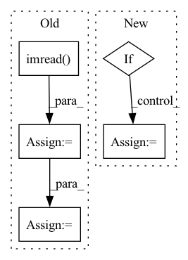

Pattern ID :1420

Before Change
// Image
t1 = time_sync()
im = cv2.cvtColor(cv2.imread(file), cv2.COLOR_BGR2RGB)
im = transforms(im).unsqueeze(0).to(device)
im = im.half() if model.fp16 else im.float()
t2 = time_sync()
dt[0] += t2 - t1
After Change
source = str(source)
is_file = Path(source).suffix[1:] in (IMG_FORMATS + VID_FORMATS)
is_url = source.lower().startswith(("rtsp://", "rtmp://", "http://", "https://"))
if is_url and is_file:
source = check_file(source) // download
seen, dt = 1, [0.0, 0.0, 0.0]
device = select_device(device)
In pattern: SUPERPATTERN
Frequency: 4
Non-data size: 5
Instances
Fragment ID: 6597988
Project Name: ultralytics/yolov5
Commit Name: 64e0757edffc6b2e927e16c8e2aa26439aceb4ce
Time: 2022-08-17
Author: ayush.chaurarsia@gmail.com
File Name: classify/predict.py
M Class Name: AnonimousClass
N Class Name: AnonimousClass
M Method Name: run(9)
N Method Name: run(10)
M Parent Class:
N Parent Class:
M File Name: classify/predict.py
N File Name: classify/predict.py
M Start Line: 38
M End Line: 82
N Start Line: 41
N End Line: 81
'>
Before Change
img, target
img_id = self.ids[index]
img = cv2.imread(self._imgpath % img_id, cv2.IMREAD_COLOR)
height, width, _ = img.shape
target = self.load_anno(index)
After Change
Return:
img, target
if self.imgs is not None:
target, img_info, resized_info = self.annotations[index]
pad_img = self.imgs[index]
img = pad_img[: resized_info[0], : resized_info[1], :].copy()
else:
img = self.load_resized_img(index)
target, img_info, _ = self.annotations[index]
return img, target, img_info, index
'>
Fragment ID: 6597985
Project Name: megvii-basedetection/yolox
Commit Name: c9fe0aae2db90adccc90f7e5a16f044bf110c816
Time: 2021-08-19
Author: ruinmessi@gmail.com
File Name: yolox/data/datasets/voc.py
M Class Name: VOCDetection
N Class Name: VOCDetection
M Method Name: pull_item(2)
N Method Name: pull_item(2)
M Parent Class: Dataset
N Parent Class: Dataset
M File Name: yolox/data/datasets/voc.py
N File Name: yolox/data/datasets/voc.py
M Start Line: 141
M End Line: 147
N Start Line: 235
N End Line: 243
'>
Before Change
def __getitem__(self, index):
if self.cv_mode:
img = cv2.imread(self.img_names[index])
img = cv2.cvtColor(img, cv2.COLOR_BGR2RGB)
else:
img = Image.open(self.img_names[index])
label = self.gt_texts[index]
After Change
if self.transforms:
img, label = self.transforms(img, label)
if not self.unknown:
out_of_char = f"[^{self.character}]"
label = re.sub(out_of_char, "", label)
return img, label
'>
Fragment ID: 6598017
Project Name: media-smart/vedastr
Commit Name: 685a5e31bf5867fe5db62ba54b0b703b25136ce7
Time: 2020-04-01
Author: jun.sun@media-smart.cn
File Name: vedastr/datasets/base.py
M Class Name: BaseDataset
N Class Name: BaseDataset
M Method Name: __getitem__(2)
N Method Name: __getitem__(2)
M Parent Class: Dataset
N Parent Class: Dataset
M File Name: vedastr/datasets/base.py
N File Name: vedastr/datasets/base.py
M Start Line: 48
M End Line: 53
N Start Line: 49
N End Line: 57
'>
Before Change
if self.is_colorized_mask:
datapoint = preprocess_mask_colorize(cv2.imread(self.data_fps[true_i + t], 0), self.num_channels)
elif self.is_mask:
datapoint = np.expand_dims(cv2.imread(self.data_fps[true_i + t], 0), axis=-1) // imread() grayscale mode
datapoint = preprocess_mask_inflate(datapoint, self.num_channels) // apply preprocessing
else:
datapoint = cv2.imread(self.data_fps[true_i + t])
datapoint = cv2.cvtColor(datapoint, cv2.COLOR_BGR2RGB)
After Change
for t in range(0, self.sequence_length, self.step):
if self.is_mask:
datapoint = cv2.imread(self.data_fps[true_i + t], 0)
if self.is_colorized_mask:
datapoint = preprocess_mask_colorize(datapoint, NUM_CLASSES)
else:
datapoint = preprocess_mask_inflate(datapoint, NUM_CLASSES) // apply preprocessing
else:
datapoint = cv2.imread(self.data_fps[true_i + t])
datapoint = cv2.cvtColor(datapoint, cv2.COLOR_BGR2RGB)
'>
Fragment ID: 6597993
Project Name: ais-bonn/vp-suite
Commit Name: cf5ca3fe00852cec0794f4f656cb32ba3de0cf00
Time: 2021-08-02
Author: boltres@ais.uni-bonn.de
File Name: dataset.py
M Class Name: SynpickVideoDataset
N Class Name: SynpickVideoDataset
M Method Name: __getitem__(2)
N Method Name: __getitem__(2)
M Parent Class: Dataset
N Parent Class: Dataset
M File Name: dataset.py
N File Name: dataset.py
M Start Line: 93
M End Line: 105
N Start Line: 95
N End Line: 105